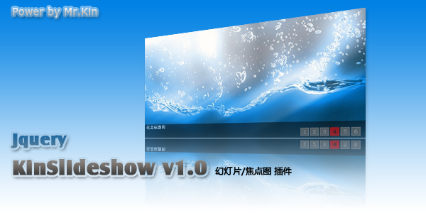
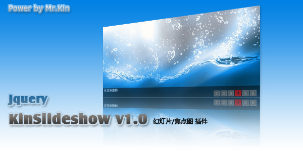

*焦点图显示的标题为 img 中 alt 属性中的文字
*当只有一张图片时不显示按钮，但也会有无缝切换效果
$(function(){
$("#KinSlideshow").KinSlideshow({
moveStyle:"down", //设置切换方向为向下 [默认向左切换]
intervalTime:8, //设置间隔时间为8秒 [默认为5秒]
mouseEvent:"mouseover" //设置鼠标事件为“鼠标滑过切换” [默认鼠标点击时切换]
titleFont:{TitleFont_size:14,TitleFont_color:"#FF0000"} //设置标题文字大小为14px，颜色：#FF0000
});
})
<div id="KinSlideshow" style="visibility:hidden;">
<a href="http://www.qq1.com" target="_blank"><img src="images/1.jpg" alt="这是标题一" /></a>
<a href="http://www.qq2.com" target="_blank"><img src="images/2.jpg" alt="这是标题二" /></a>
<a href="http://www.qq3.com" target="_blank"><img src="images/3.jpg" alt="这是标题三" /></a>
<a href="http://www.qq4.com" target="_blank"><img src="images/4.jpg" alt="这是标题四" /></a>
<a href="http://www.qq5.com" target="_blank"><img src="images/5.jpg" alt="这是标题五" /></a>
<a href="http://www.qq6.com" target="_blank"><img src="images/6.jpg" alt="这是标题六" /></a>
</div>
intervalTime:5,//设置间隔时间为5秒 【单位：秒】 [默认为5秒]moveSpeedTime:400//切换一张图片所需时间，【单位：毫秒】[默认为400毫秒]moveStyle:"left",//切换方向 可选值：【 left | right | up | down 】left:向左切换,right:向右切换,up:向上切换,down:向下切换 [默认向左切换]mouseEvent:"mouseclick",//鼠标操作按钮事件,可选值：【mouseclick | mouseover】mouseclick：鼠标单击切换。mouseover：鼠标滑过切换。[默认为鼠标点击按钮切换]isHasTitleBar:true,//是否显示标题背景 可选值：【 true | false 】[默认为true]titleBar:{titleBar_height:40,titleBar_bgColor:"#000000",titleBar_alpha:0.5},//标题背景样式，(isHasTitleBar = true 前提下启用)titleBar_height :40 - > 标题背景高度。[默认：40] titleBar_bgColor:"#000000" - > 标题背景颜色。[默认：#000000] titleBar_alpha:0.5 -> 标题背景透明度，取值【0~1】。[默认：0.5]isHasTitleFont:true,//是否显示标题文字 可选值：【 true | false 】[默认为true]titleFont:{TitleFont_size:12,TitleFont_color:"#FFFFFF",TitleFont_family:"Verdana",TitleFont_weight:"bold"},//标题文字样式，(isHasTitleFont = true 前提下启用)TitleFont_size - > 标题文字大小 单位像素。[默认：12] TitleFont_color:"#FFFFFF" - > 标题文字颜色。[默认：#000000] TitleFont_family:"Verdana" -> 标题文字字体。[默认：Verdana] TitleFont_weight:"bold" -> 标题文字粗细。可选值：【 bold | normal 】[默认："bold"] ,normal 正常 不加粗。isHasBtn:true,//是否显示按钮btn:{btn_bgColor:"#666666",btn_bgHoverColor:"#CC0000", btn_fontColor:"#CCCCCC",btn_fontHoverColor:"#000000",btn_fontFamily:"Verdana", btn_borderColor:"#999999",btn_borderHoverColor:"#FF0000", btn_borderWidth:1,btn_bgAlpha:0.7}//按钮样式设置，(isHasBtn = true 前提下启用)btn_bgColor:"#666666" -> 按钮背景颜色 [默认："#666666"]。 btn_bgHoverColor:"#CC0000" -> 按钮滑过/点击 背景颜色 [默认："#CC0000"]。 btn_fontColor:"#CCCCCC" -> 按钮文字颜色 [默认："#CCCCCC"]。 btn_fontHoverColor:"#000000" -> 按钮滑过/点击 按钮文字颜色 [默认："#000000"]。 btn_fontFamily:"Verdana", -> 按钮文字字体 [默认："Verdana"]。 btn_borderColor:"#999999" -> 按钮边框颜色 [默认："#999999"]。 btn_borderHoverColor:"#FF0000" -> 按钮滑过/点击 按钮边框颜色 [默认："#FF0000"]。 btn_borderWidth:1 -> 按钮边框宽度，单位像素 不能超过3 [默认：1]。 btn_bgAlpha:0.7 -> 按钮透明度 ，取值【0~1】 [默认：0.7]。【多项复合】参数调用说明
$(function(){ $("#KinSlideshow").KinSlideshow({ titleFont:{TitleFont_size:14,TitleFont_color:"#FF0000"}//设置标题文字大小为14px，颜色：#FF0000 【titleFont 其他未设置的 使用默认参数设置】}); })
外层div建议加上一句样式：style="visibility:hidden;"
不加此句在IE下页面刚加载的瞬间时候会看到所有图片原始样子
这是因为KinSlideshow 要等页面加载完成才能解析页面中要设置成焦点图的HTML
虽然只有不到0.01秒的瞬间但用户体验不太好，所以建议加上。不加对程序也没影响！
想要兼容Chrome需要在img标签中写上图片的实际宽度和高度<img src= width="xx" height="xx" alt="标题" >,其他浏览器不需要。<img src="" alt="标题" >